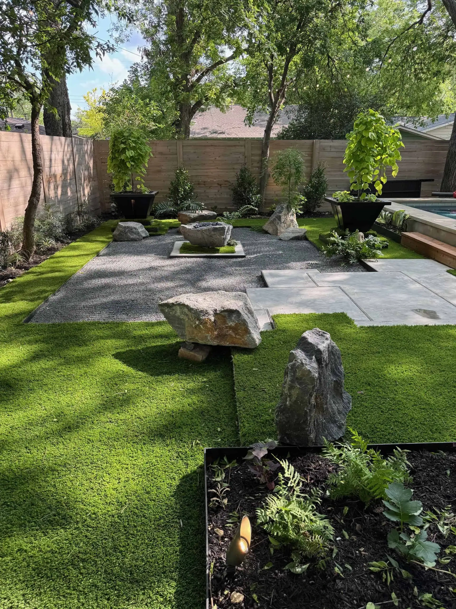
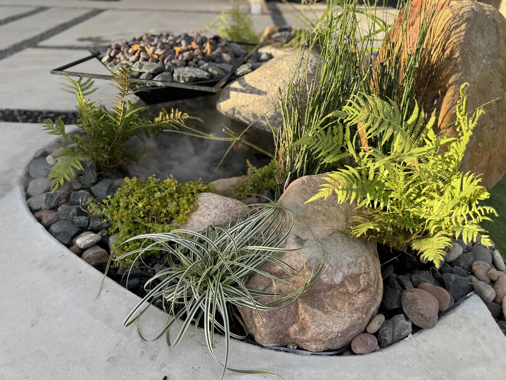

If you are considering replacing your thirsty lawn with a xeriscape, the first question is always the same: what is this going to cost? As a landscaping company that has installed hundreds of xeriscapes across Austin, Round Rock, Cedar Park, and Westlake Hills, we can give you real numbers instead of vague ranges pulled from a national database.
The short answer: most Austin xeriscape projects land between $5,000 and $45,000, depending on the size of the area, the materials you choose, and how much existing landscape has to come out first. Here is how that breaks down.
Cost by Project Size
Small projects (under 500 sq ft) — $5,000 to $12,000. A front yard strip, a side yard conversion, or a courtyard. Typically includes decomposed granite or crushed limestone, a clean steel edge, 15 to 25 native plants, and drip irrigation. This is where most homeowners start, and the results are dramatic even at this scale.
Medium projects (500–1,500 sq ft) — $12,000 to $28,000. A full front yard or a significant backyard zone. You are usually adding boulders, multiple planting beds, pathways, and possibly accent lighting. Material choices start to matter more here — the difference between basic DG and a layered hardscape with flagstone accents can be $8,000 or more.
Large projects (1,500+ sq ft) — $28,000 to $45,000+. Full yard transformations. At this level we are designing outdoor living zones, integrating fire features, building custom steel planters, and creating genuine outdoor rooms. These projects often include WLED or FCOB landscape lighting, seating walls, and specimen trees like Desert Willow or Anacacho Orchid.

Where the Money Goes
Clients always ask what they are actually paying for. Here is a typical material and labor breakdown for a mid-range xeriscape project in Austin:
- Decomposed granite / crushed stone: $3–$6 per square foot installed, including compacted base and weed barrier
- Native and adapted plants: $15–$85 per plant depending on size. A 5-gallon Flame Acanthus is around $25. A 30-gallon Mexican White Oak is $250+
- Steel edging: $8–$14 per linear foot for 1/4-inch hot-rolled steel, welded on site and set in concrete
- Drip irrigation: $1,500–$3,500 for a full zone system with timer
- Boulder placement: $200–$800 per boulder depending on size and delivery
- Labor: Typically 40–50% of the total project cost. Xeriscape installation is skilled work — proper grading, drainage, soil preparation, and steel fabrication all require experienced crews


Xeriscape vs. Traditional Lawn: the Real Math
A traditional St. Augustine lawn in Austin costs between $150 and $300 per month to maintain when you factor in mowing, fertilizing, weed control, and irrigation. That is $1,800 to $3,600 per year. Over ten years, you are looking at $18,000 to $36,000 in maintenance alone — and that does not include the water bill.
A properly installed xeriscape costs almost nothing to maintain after the first year of establishment watering. The plants are native or adapted to Central Texas. They do not need fertilizer. They do not need weekly mowing. Most of our clients see their water bills drop 40–60% after converting to xeriscape.
Austin Water Restrictions and Why They Matter
Austin Water has enforced Stage 2 watering restrictions more times than most homeowners can count. Under Stage 2, you can only water one day per week with an automatic system. St. Augustine does not survive on one day a week in July. It turns brown, develops fungus, and dies in patches.
Xeriscape plants like Blackfoot Daisy, Mexican Feathergrass, Salvia greggii, and Agave americana actually prefer the dry conditions. They were built for this climate. Once established, most of these species need supplemental water only during extreme drought — and even then, a deep soak every two to three weeks is enough.
The City of Austin also offers WaterWise rebates for homeowners who replace turf with water-efficient landscaping. Depending on the program year, rebates can offset $500 to $2,000 of your project cost.
Why Xeriscape Works in Central Texas
Central Texas is not the desert, but it is not the Midwest either. We sit in a transition zone with alkaline clay soils, brutal summer heat, unpredictable freezes, and long dry stretches. Xeriscape is not about rocks and cactus — it is about designing a landscape that works with this climate instead of fighting it.
A well-designed xeriscape in Austin includes layers: groundcover like Silver Ponyfoot or Frog Fruit, mid-height grasses like Lindheimer Muhly, flowering perennials like Mealy Blue Sage, and canopy trees like Texas Mountain Laurel. The result is a landscape with year-round color, texture, and structure that looks better every year as it matures — and gets cheaper to maintain every year as it establishes.
Get a Free Xeriscape Estimate
Every yard is different. Soil conditions, grade changes, existing trees, sun exposure, and your aesthetic preferences all factor into the final number. We provide free on-site estimates for every project, and we work with any budget.
Take a look at our xeriscape services page to see examples of our work, or request a free consultation to get a custom quote for your property.